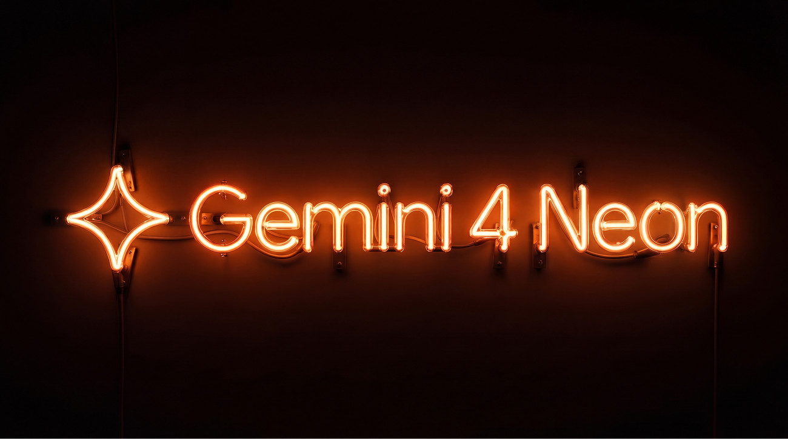
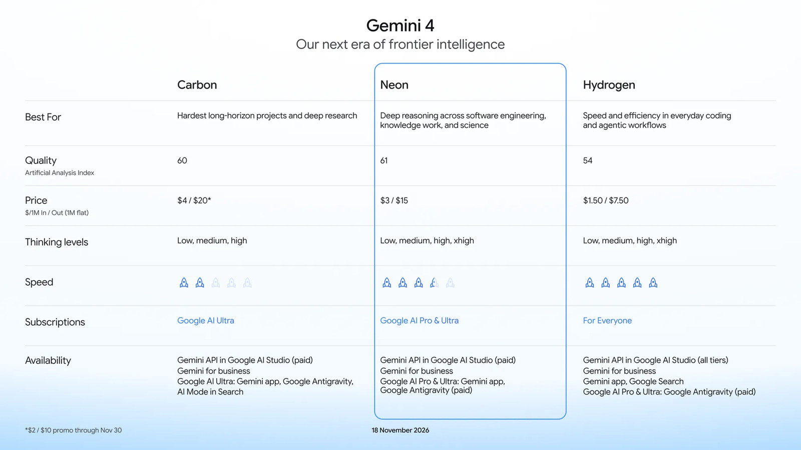
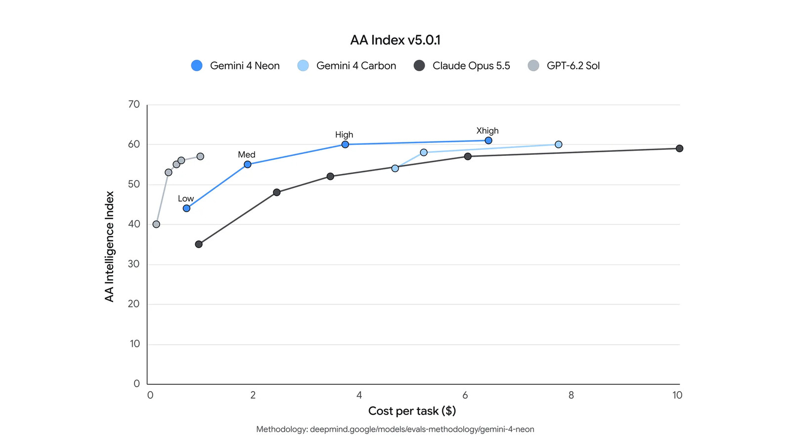

11 月 18 日，Google 把 Gemini 4 Neon 放了出来。它被摆在 Carbon 和 Hydrogen 之间，给那些既需要较强推理、又不能每次都上最重一档的活。

Gemini 4 Neon 发布题图。图片来源：Google 官方博客
官方在同一张对照表里，把三档的分工写得很清楚。Carbon 留给最难、周期最长的项目和深度研究；Hydrogen 负责日常写代码和 Agent 流程里要速度、要省的部分；Neon 夹在中间，面向软件工程、知识工作和科学里那些既需要较强推理、又不能每次都上最重一档的活。

Google 官方给出的 Gemini 4 选型对照，日期为 2026 年 11 月 18 日。图中 Carbon 标价旁有脚注：11 月 30 日前促销价为 2 / 10 美元。图片来源：Google 官方博客
对照表上的 Artificial Analysis Intelligence Index 是这样排的：Carbon 60，Neon 61，Hydrogen 54。发布文写明，Neon 的 61 分对应的是 xhigh 思考档，总榜排第三，排在它前面的是更大、更慢的模型。对照表没有写 Carbon 的 60 分和 Hydrogen 的 54 分分别来自哪一档。
思考档也不完全一样。Neon 和 Hydrogen 都有 low、medium、high、xhigh 四档，默认是 high。Carbon 在这张表上只写到 high，没有 xhigh；AI Studio 的说明也写了，Carbon 和 Argon 默认是 medium，上限是 high。需要最深一档推理时，Neon 比 Carbon 多一档可调。AI Studio 的建议是：大多数复杂任务从 high 起，只有 high 不够用、又能接受更高延迟和更多 token 时，再上 xhigh。四个档都值得在自己的评测集上跑一遍，然后选能过线的最低档。
Argon 还在，只是这张三档对照表没有把它画进去。
入口可以按「你是谁」来记。
开发者：在 Google AI Studio 和 Android Studio 里走 Gemini API 的付费档，模型 ID 是 gemini-4-neon。官方写明，Neon 只在付费档开放，免费档没有。如果你同时是 Google AI Pro 或 Ultra 订阅者，还可以在 Google Antigravity 和 AI Studio 里试。
企业：在 Gemini for business 里通过 API 或模型下拉菜单选 Neon，也可以在 Antigravity 里用。
普通用户：Google AI Pro 和 Ultra 订阅者，可以在 Gemini 应用的模型菜单里选 Neon。Antigravity 这边，官方写的是向付费的 Pro 和 Ultra 订阅者推送，覆盖桌面应用、命令行和 IDE 插件。
网络安全防守方：面向防守的 Neon 会在之后几天，通过 Fairwind Program 交给符合条件的成员。申请仍要联系自己的 Cloud 客户团队。
和 Carbon 相比，消费端入口更宽：Carbon 在官方这张对照表上写的是 Ultra，Neon 写的是 Pro 和 Ultra。Hydrogen 则写着「For Everyone」，API 也覆盖所有档位。Neon 不是免费档模型，选型时先看自己在不在付费名单里。
Neon 的 API 标价是统一定价，100 万上下文里一个价：每百万 token 输入 3 美元、输出 15 美元，思考 token 算在输出里。隐式缓存命中后，缓存输入是 0.15 美元，相当于少付 95%。官方说明还写了，Neon 不支持显式缓存，至少 4,096 个 token 的提示才会走隐式缓存。
Carbon 这边还有窗口。Google 的 API 定价页，以及 Neon 这张官方对照表的脚注，都写着同一件事：Carbon 在 2026 年 11 月 30 日之前是每百万 token 输入 2 美元、输出 10 美元，12 月 1 日起是 4 / 20 美元。也就是说，在窗口还没关的这几天，Carbon 的单价比 Neon 更低；窗口关掉以后，Carbon 的标价会高于 Neon。同一张定价页上，Argon 目前也写着同一组日期和价格。
选型不能只看每百万 token 的标价。官方称，在默认的 high 思考档下，Neon 的单任务成本比 Carbon 低 32%。官方未说明此处采用的是 Carbon 入门价还是常规定价，不能直接按每百万 token 标价复算这组差距。发布文还说，在 Vals Index 和 Agent Arena 上，Neon 在 high 档处于帕累托前沿，单任务成本大约比领先的竞品前沿模型低 50% 到 80%；切到 xhigh 之后，智能分数最高，官方称仍比竞品在最高档时的单任务成本低 36% 以上。这些都是 Google 发布时的比较口径。

Artificial Analysis Intelligence Index 分数与单任务成本。发布文写明，Neon 的 61 分对应 xhigh 思考档。图片来源：Google 官方博客
11 月里拿 Carbon 和 Neon 对比，两边的单价还不在同一条起跑线上；12 月 1 日起再按 4 / 20 和 3 / 15 看长期账单。最终还是要看自己的任务在 high 和 xhigh 下实际花掉多少。
同一天，Antigravity 团队写了 Neon 怎么进到这套编码环境里。除了单独用 Neon，官方还把 Orchestrator 的搭配扩到了「Neon 负责规划，Hydrogen 负责执行」。你不用在任务做到一半时手动切模型：前面的规划、架构和复杂判断交给 Neon，常规改代码、装依赖和跑测试交给 Hydrogen；Hydrogen 卡住了，再交回 Neon 看现场、改计划，然后接着跑。官方的说法是，判断用在该用的地方，速度和配额用在其余步骤上。
这和「中间档自己就能把活做完」并不矛盾。简单、重复的步骤不必全程占用 Neon；真碰到要重新想清楚的地方，再把它请回来。
开发细节里还有两处会影响到账单和超时。Neon 的 100 万上下文是统一窗口，输入、思考和输出算在同一笔预算里。单次同步输出默认最多 65,536 个 token；要写得更长，需要打开后台执行，或使用客户端续写，才能把输出续到窗口上限。另外，Antigravity 的 Agent 在 Gemini Managed Agents 里已经支持 gemini-4-neon，可以单独用，也可以和 Hydrogen 搭配。
发布文里还有一组官方数字，都是 Google 自己发布时的口径。
编码方面，Neon 在 Artificial Analysis Coding Agent Index 上报了总分第一，分数是 58.6；Terminal-Bench 4.1 是 65.2%；FrontierCode 2.0 在默认 high 档是 46.2%。知识工作和科学方面，Vals Index 排第二，分数是 70.9%，并在 Legal Research Bench 和 Tax Agent Bench 上报了第一；Terminal-Bench Science 是 70.5%。Agent 方向，Arena 新的 Agent Arena Index 全球排第二，分数 1,336，样本是 4,200 多次真实 Agent 会话；Zapier 的 AutomationBench 是 56.3%，官方称总分第一。
可靠性上，官方说 Neon 在内部的 Antigravity 测试里，编造率是 Gemini 4 各档里目前最低的。间接提示注入方面，在 Gray Swan 的 IPI 基准上，官方称加上实时防护并开到最高思考档时，攻击成功率为 0，与其他 Gemini 模型持平。这些同样是发布材料里的说法。
如果你已经在用 Hydrogen，可以把那些偏复杂、又经常要跑的任务拿出来试试 Neon。一直在用 Carbon 做日常难活的，也可以让 Neon 一起进对照：窗口还在的这几天，两边单价并不一样，窗口关掉以后，再按各自的正价看长期账单。
来源清单：
Google 官方博客：Introducing Gemini 4 Neon（2026 年 11 月 18 日）：https://blog.google/innovation-and-ai/models-and-research/gemini-models/introducing-gemini-4-neon/
Google AI Studio：What's new in Gemini 4 Neon：https://aistudio.google.com/docs/whats-new-gemini-4-neon
Google Antigravity 博客：Gemini 4 Neon in Google Antigravity（2026 年 11 月 18 日）：https://antigravity.google/blog/gemini-4-neon-in-google-antigravity/
Gemini API 定价页：https://ai.google.dev/gemini-api/docs/pricing